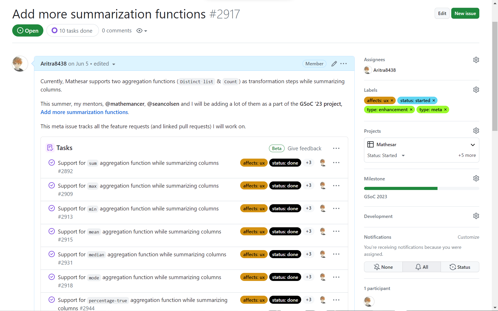
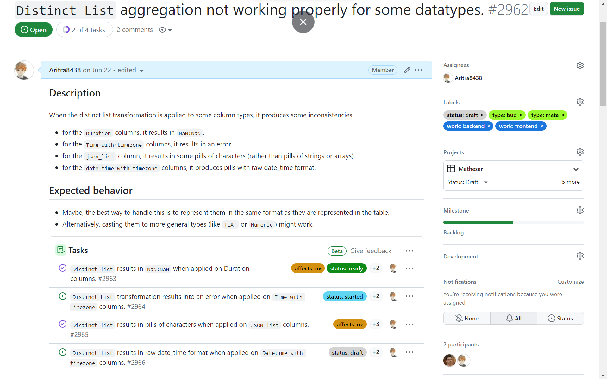

GSoC '23: Thanks for Everything
Hey, I'm Aritra, a sophomore pursuing my Master's degree in Computer
Science at Chennai Mathematical Institute. I am contributing to
Mathesar as part of GSoC'23, my project is to "
Add more summarization functions
". In this blog, I will share my work and GSoC experience with my
organization.
Here is my
LinkedIn profile,
GitHub profile
and portfolio. There, you will find
numerous ways to get in touch with me. I will be writing more blogs
on my future journeys; you can find them
here.
Project Synopsis:
The aim of my project was to add more aggregation functions to the
Mathesar UI, which will let users easily aggregate data based on a
grouping column. Here is a list of different aggregation functions
that we have added to the UI. (Click on the images to visit the
issues)

Apart from them, I have worked on fixing some regression bugs
related to the summarization.

-
Support for sum aggregation function while summarizing
columns:
In this PR, I have added the sum summarization function. Well, what does that mean? Here is a video that explains how it works. In short, If you have a grouping column and a column you want to aggregate (or calculate the sum of), then this summarization function will result in a table containing the groups and their sums. Let's assume, We have a table which has columns: player's name, Year, Goals scored in that year. Now, we want to calculate how many goals each player scored throughout his journey. It's easy now, right? Just add players as grouping columns and goals as summarization columns. -
Add median aggregation function:
In this PR, I have added the median summarization functions. How is median defined? If you give an ordered array, median is the middle element of the array after sorting. -
Add Peak Time aggregation function:
In this PR, I have added the peak time summarization functions. Now, what is peak time? - Modular average of time? How is this different from the average? Well, time is cyclic and if two events happen at 11:59 pm and 12:01 am, you would not expect the average time to be 12:00 pm, right? Rather 12:00 am is a good candidate. Here is a blog that explains the modular average. Here is the result of such a summarization.
{kind=link}
- Add support for multiple grouping columns.
- Add support for preprocessing of summarized columns.
Again a thanksgiving:
While working on this project, I have learnt a lot. With Brent and
Sean's guidance, nothing felt too challenging. Thanks to Dom,
Mukesh, Pavish, Rajat, Ghislaine, Anish and my co-interns Maria,
Varsha and Anshuman for helping me in the project and answering all
my doubts. Lastly, a special thanks to Kriti for managing this
wonderful organization.
All the meetings with Brent and Sean, they were super helpful
to me, I have gained in-depth knowledge of Git, Django and Postgres.
Those community events, where we played different multiplayer games,
I will miss them for sure.
So, thank you Mathesar and Google. I'm glad to be a part of such
a great programme.